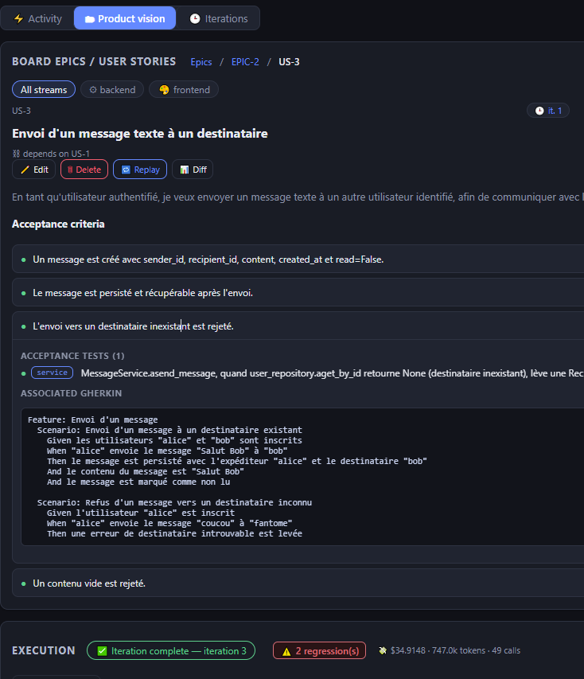
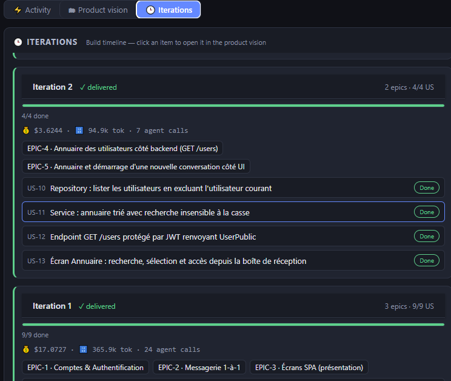
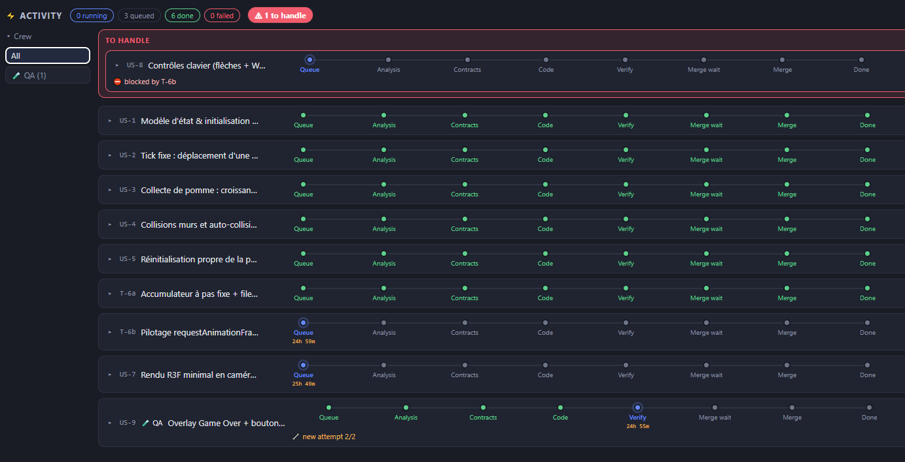

The start of code by AI
November 2022, GPT-3.5; a few months later, GPT-4. Generative AI enters the developer's daily workflow.
Ask & copy-paste
You describe a need in the ChatGPT interface, get back a snippet of code — then paste it into your IDE.
Copilot
Line-by-line autocompletion, then a first built-in chat window : turning a text request into code, without leaving the editor.
The agent takes the keyboard
The agent embeds in the IDE with Copilot and Cursor, then breaks free in the terminal with Claude Code, and reaches the cloud with Codex.
It brings a two-step approach :
Plan
Think, specify, and frame what you're going to build — before writing a single line.
Implement
Write the code, iterate, fix — execution guided by the plan.
The Harnesses
of more autonomous agents
— example : Claude Code.
The agent doesn't just write code :
a ReAct loop drives it to act, verify and fix — linter, compilation, unit and e2e tests.
Skills
Capabilities decoupled from agents, summoned on demand.
Sub-agents
Specialized sub-agents, spawned on demand for focused tasks.
Agent teams
Teams of agents that share the work and stay in sync.
Dynamic workflows
Flows that adapt in real time : fan-out, verification, synthesis.
Spec Driven Development
The cursor shifts : specify more and more, code and debug less and less. You define a goal — the agent decides the how.
Toward proactive and adaptive agents
A new generation of harnesses that pick the agents themselves and learn from you across sessions.
Pick their agents
Transparently decide which agents to mobilize to meet the need.
Adapt to you
A persistent memory that learns the user and adjusts over time.
The software factory
What if the software production line ran on its own? Humans step in only through limited, high-level and adaptive interventions. This is the Autospec initiative.
Targeted interventions
The line moves on its own ; humans are called in only at the decision points that truly matter.
Decide, don't execute
You arbitrate intent and structural choices — not implementation details.
A loop that adjusts
The level and timing of human control adapt to criticality and confidence.
→ Automate the production line — and keep humans where they create the most value.
Project Autospec
It all begins with a single natural-language prompt :
Intelligence in the loop
Role-based agents (PM · PO · QA · Dev, from BMAD) run a BDD-then-strict-TDD cycle — Gherkin criteria first, tests next, code last — driven by a ReAct loop code → verify → fix, all the way to e2e Playwright tests that validate the real result.
Quality by design
Design principles are wired into the loop : SOLID architecture & separation of concerns, and agents that search for what exists before creating to stay DRY. Structural, not optional.
Deterministic verifiability
A result genuinely verified at every step — the foundation for fast feedback loops, where confidence no longer rests on luck.
A team of preconfigured agents
Roles drawn from BMAD Method, chained from framing all the way to tested code.
Define
Writes the brief and frames the need : the what and the why.
Break down
Structures and prioritizes into EPICs & user stories, writes the acceptance criteria and tests.
Build
BDD contracts first, then full TDD : tests → code → run, in feedback loops.
Validate
End-to-end automated testing : e2e scenarios driven by Playwright, all the way to the green light.
→ Organizational intelligence lives in the agentic loop, not in the operator's head.
From spec to tested code

pres/assets/autospec-vision.pngdrop it here
pres/assets/autospec-iterations.pngdrop it here
pres/assets/autospec-activity.pngdrop it here→ Brief in, stories broken down, BDD then TDD, e2e Playwright : the pipeline carries the spec all the way to tested code, with cost and tokens tracked at every step.
Specify, then let it run
From copy-paste to spec-driven, the bar for the « how » keeps moving up to the agent. What sets you apart : the method encoded in the loop.
A trajectory
From chatbot to spec-driven harness, growing autonomy in just a few years.
Method wins
The differentiator is no longer the code : it's the process encoded in the agent.
Your move
Autospec shows that a homemade harness is now within reach.
→ The repo is open · build your own.